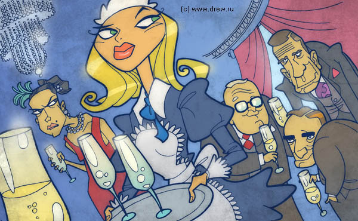
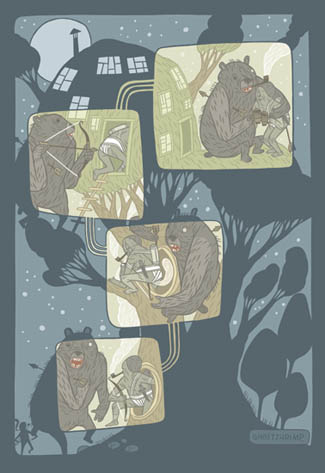
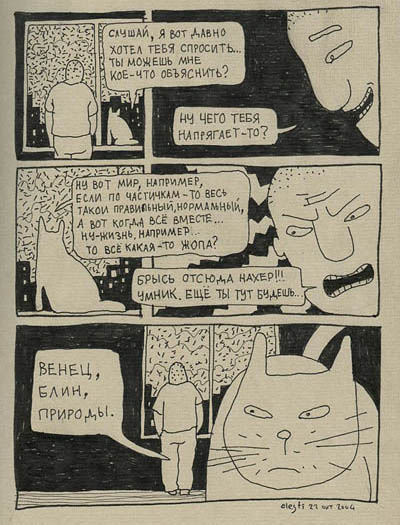
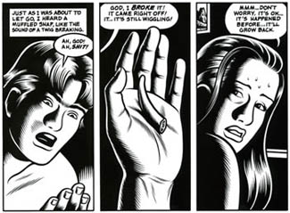
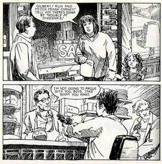
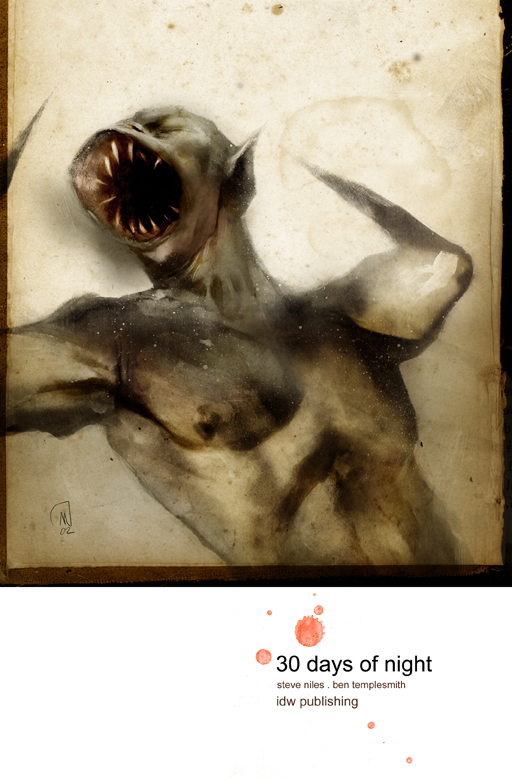
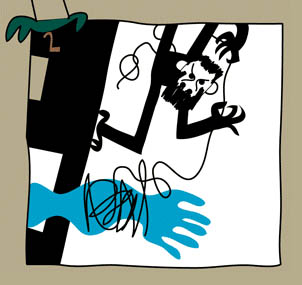

И СНОВА ЗДРАВСТВУЙТЕ
О многоклеточной иллюстрации (комикс)
Я наблюдаю, иллюстраторы в основном пугливо сторонятся комикса как отдельной и даже несмежной профессии. Термин «narrative illustration» (повествовательная иллюстрация?), так сказать, до сих пор никто не перевел на русский. В наших краях комиксом заправляет узкий кружок специалистов. И это, я считаю, неправильно. Даже и не стоит, наверное, говорить о том, что комикс - это богатейшая традиция, в которой любой иллюстратор найдет, чем вдохновиться, и кроме того - залежь чисто технических решений. Каждому, наверное, приходилось сталкиваться с серией - а серия это уже полкомикса, и некоторые подходы просто необходимо оттуда заимствовать. К примеру, нарисовать для начала героя хотя бы в двух ракурсах. Очень помогает.

Комиксеры, как правило, ловчее и тщательнее «строят» фигуру - хотя бы затем, что, не зная механики персонажа, удержать его невозможно. Отчасти поэтому комикс в наших краях традиционно ассоциируется с известным мускулисто-гротескным стилем. Но и здесь, как и в иллюстрации, ничто не мешает работать в самом условном, формальном ключе. Я знаю, что всем надоел со своим Дэном Джеймсом (кумир, чего вы хотите), но это и правда отличный пример одинаково сочных работ там и там. Интересно при этом, что в комиксе он, как правило, ограничивается двумя контрастными цветами, а в иллюстрации последнее время целиком перешел на игру полутонов.

Но к делу. За время моего вынужденного отпуска случились следующие новости: Новость раз. Олег Тищенков выпустил, наконец, книгу с комиксами про Кота.

Очень люблю Олега как человека и коллегу, но пусть он меня простит - этот вот Лоуфай мне стократ милее всего его высокопрофессионального ваком-пейнтера. Ну, я вообще за Лоуфай, особенно когда автору есть что сказать (и против пейнтера).
Новость два. Дэвид Финчер, один из самых мощных режиссеров нашего времени, собрался экранизировать роман Чарльза Бёрнса «Черная Дыра», одну из немногих Больших Книг за всю историю комикса. Чрезвычайно мрачную.

Мне Бернс как художник не кажется хорошим примером для подражания, он, на мой вкус, уделяет гладкости штришочков больше внимания, чем пластике героев - но литератор он, по крайней мере, замечательный. Да и штришочки, надо признать, работают. Отметим, что речь идет о человеке, тяжким трудом вырвавшемся из как бы «независимых» в как бы мейнстрим. Значение этой новости велико, и означает она вот что: комикс есть путь на вершину мира, а именно в Голливуд. Нынче даже необязательно быть лучшим (хотя это сильно повышает шансы). Главное – придумать ход, который сработает в кино (переживающее, как известно, суровый кризис идей) и затем - чтобы его заметили нужные люди. Пример тому довольно унылый в смысле рисунка графический роман История Насилия, кинофильм по которому меня вот пробрал до костей.

А вот «30 дней ночи» Бена Темплсмита - неизвестно, выиграл ли при переносе на большой экран.

Примеров масса, и ничего такого, что тебе, коллега, слабо было бы попробовать. Иллюстрация соотносится с комиксом как одноклеточное с многоклеточным, как спринт и марафон. Для иллюстратора комикс - это следующая ступень эволюции. Вопрос о том, как измерить класс иллюстратора, мы оставим на потом (есть по этому поводу идеек), но вот, в чем я уверен твердо. Амбиции иллюстратора измеряются именно готовностью перейти на следующий уровень. Нет ничего плохого в том, чтобы возделывать свой садик, но если у вас амбиции, то измерять их количеством нулей в гонораре или близостью того дня, когда за вами придет, скажем, Нью-Йоркер - мещанство.
Макс Покалев, к слову, на одной из прошлогодних Коммиссий подтвердил в этом смысле свою крутоту

И к слову новость три: собственно, Комиссия, единственный в наших краях фестиваль комиксов, 1-го апреля закрывает прием работ. Времени совсем мало, но до следующей Коммиссии - год. Давайте, что ли, покажем им.